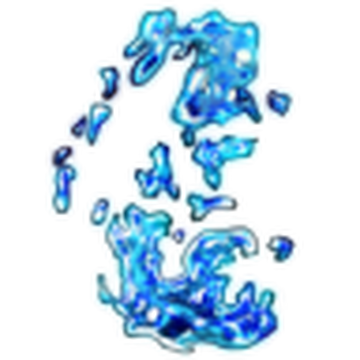

Para ser un buen jugador en The Strongest Battle Grounds tienes que saber como usar todos y cada uno de
los personajes que hay disponibles en el juego, todos y cada uno de ellos
tienen mecanicas diferentes y habilidades unicas que los hacen especiales
unos son amados u otros odiados, muy faciles de usar o dificiles de usar pero depende
de ti y de tu habilidad en emplearlos como se debe
"The Strongest Hero" o "El Heroe mas fuerte" es el personaje principal y por defecto que te entregan al entrar al juego ya que es un personaje
simple, fuerte y facil de usar para los nuevos jugadores y con ello costumbrarse al juego por sus simples y efectivos combos.
Habilidades:
Nomal punch
Se trata de un golpe fuerte que manda a una buena distancia al oponente causandole daño moderado (inbloqueable)
Consecutive punches
Como su mismo nombre dice, son una serie de golpes consecutivos perfectos para atrapar al rival (bloqueable)
Shove
Es un empujon que manda para atras al oponente dejandole vulnerable para atraparlo en un combo, esta hablidad es capaz de devolver proyectiles pero es muy dificil hacerlo
(inbloqueable)
Uppercut
Un golpe que eleva al oponente por los aires para que caiga y pueda ser combeado, con este ataque puedes levantar al oponente desde el suelo(inbloqueable)
Despertar: Serius Mode
El personaje al entrar al modo despertar ejecutara una animacion en donde choca sus puños con fuerza emitiendo una onda(no tiene daño de area)
Death Counter
Es un estado en el cual el personaje entra en donde si alguien le lanza un ataque el personaje aparecera detras del oponente recreando
la iconica encena del Death Punch del anime de One Punch Man(ese estado solo dura 10 y es insta-kill para el oponente)
Table Flip
Un ataque dificil de liberarse si es que se logra de lanzar de manera correcta, se basa en el ataque del panel del maga de One Punch Man,
"Levantamiento de mesa serio"
Serius Punch
Un golpe muy destructivo que es insta-kill para el oponente si se logra dar de la manera correcta
Pasiva: Al eliminar a un oponente con una de sus habilidades su barra de ultimate se carga 1/4
Habilidades y Ultimate
Hero Hunter

"Hero Hunter" o "Cazador de Heroes" es el personaje mas usado por los jugadores con mas tiempo y experiencia dentro del juego ,
es un personaje el cual se necesita una gran habilidad para manejarlo por sus dificiles combos pero aun asi ,si sabes usarlo nadie
te detendra (aunque en realidad no dependde del persoanje si no de ti y como lo controlas)
Habilidades:
Flowin gWater
Un agarre de golpes constantes que termina en un golpe derribando al rival (inbloqueable)
Lethal Whirlwind Stream
Otro agarre donde el rival es arrastrado por el suelo y luego asotado en el piso elevandolo al aire (bloqueable)
Hunter's Grasp
Otro agarre mas del personaje el cual levanta al rival del suelo para lanzarlo (inbloqueable)
Prey's Peril
Contra ataque que se activa antes de recibir algun tipo de daño para despues devolverlo con varios golpes y con uno fuerte (esta habilidad se puede usar contra la mayoria de ataques pero con otros no)
Despertar: Rampage
"Con su fuerza y voluntad el se levantara a los heroes y villanos el vencera" El usuario comienza a babear sangre por la boca (si el jugador tiene la opción Sangre activada en los ajustes). Después de un momento,
se limpia la sangre de la cara y golpea violentamente el suelo, creando un gran cráter a su alrededor con grietas blancas brillantes. (daño de area: medio, depende de que tan serca estuvo el rival)
Water Stream Rock Smashing
una grn y violenta lluvia de puñetazos que se lanzan con gran fuerza para despues dar un fuerte golpe que estampa al rival en el suelo
The Final Hunt
El usuario gira y golpea el suelo con la pierna. Si el golpe es acertado, el oponente sale disparado hacia arriba y queda suspendido en el aire,
girando. El jugador salta y sigue con un poderoso remate hacia abajo, lo que inflige un daño total del 69 % al objetivo y crea una onda de choque.
Rock Splitting Fist
El usuario realiza un poderoso golpe giratorio a dos manos, lanzando al objetivo hacia arriba antes de empujar al oponente con ambos puños, enviándolo a rodar.
Crushed Rock
Después de un breve retraso, el usuario se lanza hacia adelante y prepara un puñetazo. Si este golpea a un enemigo, el usuario se coloca detrás del rival, lo agarra,
se inclina hacia atrás y lo lanza contra el suelo con un suplex de cabeza enterrando al rival
Pasiva: Al eliminar a un oponente oponente con una de sus habilidades se te rellenara parte de tu barra de salud
Habilidades, Ultimate y combo para principiantes
Destructive Cyborg
"Destructive Cyborg" o "Cyborg Destructivo" es uno de los persoanjes molestos u odiados de la comunidad de The Strongest Battle Grounds ya que sus habilidades son algo
dificiles de evitar y son spam(con lanzarlas todas de una sin pensar de todas maneras haces mucho daño)
Habilidades:
Machine Gun Blows
Rafaga de puñetazos calientes que terminan en un gancho de izquierda y una patada alta tumbando al rival
Ignition Burst
El usuario se impulsa hacia adelante con los propulsores brazos y luego los extiende para realizar un golpe de
expulsión de calor que provoca un buen retroceso.
Blitz Shot
Una carga de enrgia que el usuario dispara por uno de sus brazos mecanicos
Jet Dive
El jugador usa sus pies mecanizados para impulsarse hacia arriba. Luego patea con la pierna izquierda y usa cohetes para lanzarse al suelo mientras avanza.
Despertar: Maximum Energy Output
El cuerpo del usuario llega a su maxima carga de enrgia expulsando vapor y calor (daño de area instantaneo, daño: bajo)
Thunder Kick
El usuario gira hacia la dirección en la que mira con energía naranja antes de crear una explosión de electricidad que se convierte en una patada.
Si logra dar el golpe, la víctima saldrá volando. El jugador se teletransportará directamente sobre el objetivo después de un breve retraso antes
de estrellarse.
Si falla, el jugador estampa sus manos en el suelo y carga, lo que hace que el área a su alrededor explote y cause daño de área.
Si lo interrumpen mientras carga, generará una explosión más corta que inflige menos daño.
Speedblitz Dropkick
El usuario libera una gran cantidad de energía para lanzarse hacia la dirección en la que se encuentra. Si esto golpea a un oponente,
el usuario atrapará a su víctima entre sus piernas y los lanzará a ambos hacia arriba, antes de estrellar al objetivo de cabeza contra el suelo,
creando un gran cráter y causando daño de área.
Flamewave Cannon
El jugador abre el brazo izquierdo para revelar un cañón. Luego, el usuario lanza un gran rayo que empuja a los oponentes hacia atrás,
seguido poco después por un láser más poderoso que causa más daño y empuja al oponente más hacia atrás.
Incinerate
El jugador adopta una postura y junta los brazos. Para despues de sus brazos desplegarse varias piezas y cañones de energia y disparar
una enorme explosión de calor que calcina los rivales haciendolos cenicas(depende de que tan serca estuvieron)
Pasiva 1: Al elimnar a un oponente con una de sus habilidades se te recargaran instantaneamente tus 4 habilidades
Pasiva 2: Al levantarse del suelo generara una explocion con sus propulsores aturdiento a los objetivos sercanos
Habilidades, Ultimate y combo para principiantes
Deadly Ninja
El personaje que tecnicamente es el mas odiado del juego, "Deadly Nija" o "Ninja Mortal" es un personaje muy facil de usar y con habilidades algo molestas ya que
este personaje es efectivo a distancia como de serca, tiene una mala reputacion ya que es usado mas por gente nueva del juego y por jugadores toxicos, en si el personaje
no es malo solo que no le dan el uso correcto (la mayotia lo usa para robar kills o para ser toxicos)
Habilidades:
Flash Strike
El usuario se mueve a una velocidad muy alta, dejando un rastro de cortes tras de sí que dañan a los jugadores.
Whirlwind Kick
El jugador se teletransporta hacia adelante y aturde al oponente, antes de girar y patear al objetivo hacia abajo.
Teletransportarse hacia un oponente que bloquea no aturdirá al oponente. Sin embargo, la patada evitará el bloqueo.
Scatter
El jugador se lanza y avanza en la dirección hacia la que mira mientras corta constantemente, arrastrando al jugador con él,
y termina con una carrera mientras el objetivo o los objetivos son lanzados a la ubicación del usuario.
Explosive Shuriken
El jugador lanza un shuriken que explota al entrar en contacto con algo. Si el shuriken entra en contacto con algo que no sea un humanoide,
se adherirá al objeto sobre el que aterrizó con una explosión retardada.
Despertar: Can You Even See Me?
El jugador se mueve tan rápido que varias imágenes residuales lo siguen y le provocan daño. Luego salta y cae con un pequeño impacto.(El daño dirigido de esta ultimate se puede controlar)
Twinblade Rush
El jugador carga hacia adelante instantáneamente. Si este ataque acierta, el jugador y una imagen residual atraviesan al objetivo
rápidamente mientras se mueven hacia arriba y luego cortan rápidamente hacia abajo antes de patearlo.
Straight On
El jugador comienza a correr y después de 3 segundos el usuario avanza a gran velocidad, después de 3 segundos más
el usuario se teletransporta hacia adelante y daña a cualquiera que quede atrapado en su camino.
"USE DOS VECES" Usar el movimiento dos veces cortará al usuario hacia adelante antes de tiempo.
Carnage
El jugador parpadea por un segundo y luego se teletransporta al aire, antes de desatar una gran cantidad de Shurikens
explosivos y crear una línea de destrucción frente al usuario.
Fourfold Flashstrike
El usuario se divide en cuatro imágenes residuales y ataca hacia adelante, cortando al oponente. Gira su katana antes de tirarla hacia
atrás, lo que le causa daño adicional.
Pasiva: Al eliminar a un oponente con una de sus habilidades se te consederan 3 side-dash
Habilidades, Ultimate y combo para principiantes
Brutal Demon
"Brutal Demon" o "Demonio Brutal" es el personaje con mas mecanicas del juego por sus habilidades que contienen variantes, es divertido de usar y es uno de los mas queridos
otros personajes usan sus puños, espadas, ingenieria robotica, poderes pero nada mejor que apalear a tus enemigos con un palo de metal
Habilidades:
Homerun
El jugador mueve su bate hacia arriba antes de lanzar al oponente en diagonal hacia la derecha.
Si el swing ascendente no da resultado, el jugador se lanza hacia adelante antes de golpear el bate hacia abajo.
Beatdown
El jugador avanza a toda velocidad y golpea el objetivo 6 veces con su bate mientras avanza lentamente.
El último golpe dejará a los jugadores tirados en el suelo.
Grand Slam
El usuario salta en el aire formando un arco y golpea el suelo con su bate, lo que provoca un pequeño cráter.
Los enemigos que estén de pie quedarán en posición de muñeco de trapo, pero los enemigos en posición de muñeco de
trapo rodarán. Este movimiento no otorga armadura cuando se usa, por lo que puedes ser castigado después del salto.
Si dicho arco conecta con un oponente en el aire, el usuario queda suspendido en el aire y golpea al enemigo contra el suelo,
rebota un poco y gira en el lugar, para luego alejarse.
Esta variante aplicará un retroceso después de un retraso.
Foul Ball
Si el primer golpe impacta a un oponente, este lo agarrará y luego lo arrojará al suelo, rebotándolo en el suelo y golpeándolo con el bate.
El usuario da un pequeño salto, golpea el suelo y lanza un gran montón de escombros hacia adelante, que se ve afectado por la gravedad
y seguirá viajando hasta golpear una pared, el suelo o un oponente.
Despertar: Pumped Up
Cuando te sientes muy furstrado te das contra la mesa pero el al entrar en su modo despertar se pega contra el bate 3 veces creado una onda que derriba a los oponentes sercanos
Savage Tornado
Después de un breve giro, el usuario gira 3 veces y crea tres tornados grandes que absorben a cualquiera que se interponga en su camino.
El tercero dura más. Cualquier jugador que quede atrapado por el tornado recibirá daño adicional si no cancela su ragdoll antes del impacto.
Durante el proceso de preparación, el jugador es vulnerable a las interrupciones, pero puede cancelar Golpe letal si lo usa antes de que
finalice el proceso. Sin embargo, esto no restablece el tiempo de recuperación de la habilidad.
Brutal Beatdown
Después de un breve movimiento, el jugador patea el bate en el aire, lo agarra y desata un combo de 4 golpes que se lleva a la(s) víctima(s) con ella,
antes de correr un poco y luego golpearla(s) 5 veces más. Luego forma un pequeño tornado, enviando al objetivo(s) al cielo en una pose rodante antes
de realizar un gran salto seguido de un poderoso golpe, creando un cráter masivo. La onda de choque siempre causará un 30% de daño, independientemente
de la distancia entre la víctima y el punto central.
Strength Difference
El usuario arrastra su bate por el suelo antes de lanzar un poderoso golpe diagonal. Si golpea directamente a un oponente, se activará una escena en la que
el jugador le asesta un golpe devastador en el pecho a la víctima, que la lanza lejos y forma una onda expansiva masiva a su alrededor. Si el jugador muere a
causa del ataque, sale despedido más lejos, lo que provoca un cráter en el lugar donde aterriza.
Death Blow
El usuario levanta su bate de metal en una posición defensiva. Al ser golpeado, el usuario empuja al oponente hacia atrás antes de darse la vuelta y golpear
la punta del bate de metal en el estómago del oponente. El oponente retrocede mientras mira hacia abajo y entra en pánico, mirando a derecha e izquierda
frenéticamente antes de darse la vuelta y ver ojos rojos y el bate de metal detrás de él mientras el mundo se oscurece. El usuario, con todas sus fuerzas,
presiona con fuerza contra él mientras el oponente intenta empujar el bate sin éxito y es aplastado con las piernas en el suelo.
Pasiva: Al recibir daño tu barra de despertar se rellenara poco a poco con cada golpe recibido
Habilidades, Ultimate y combo para principiantes
Blade Master
"Blade Master" o "Maestro de la hoja" es el persoanje mas infravalorado por ser algo predecible con sus ataques que pueden ser contrarestados pero si se usa de manera adecuada
es muy destructivo
Habilidades:
Quick Slice
El usuario da un salto para atras para tomar la empuñadura de su katana y realizar una serie de cortes muy rapidos (bloqueable)
Atmos Cleave
El usuario pisa el suelo, haciendo tropezar a cualquiera que se encuentre cerca antes de balancearse rápidamente
mientras gira y lo levanta por el aire, en el que el golpe final envía al oponente hacia el suelo como un muñeco de trapo. (inbloqueable)
Pinpoint Cut
El usuario se lanza rápidamente hacia adelante y patea al enemigo seguido de un poderoso corte ascendente que lo hace rodar y lo aleja.(inbloqueable)
El usuario salta instantáneamente en el aire y corta hacia abajo en un ángulo exacto de 45°, dañando a cualquiera que sea atrapado en este ataque.(inbloqueable)
Split Second Counter
El usuario levanta inmediatamente su espada en posición defensiva. Al recibir el golpe, el usuario se lanza instantáneamente detrás del oponente,
antes de envainar la katana poco después, dañando al oponente.
Despertar: Scorching Blade
El usuario desenvaina su katana para adoptar una postura mientras su espada es cubierta en llamas, da un giro lanzando un corte que genera una gran explosión(daño de area masivo)
Sunset
Después de un breve movimiento, el usuario realiza un combo de 4 golpes que arrastra al oponente(s) consigo, antes de hundir la espada en el pecho del objetivo,
creando una gran explosión e infligiendo daño por salpicadura a los enemigos circundantes.
Solar Cleave
El usuario sostiene su espada en una posición de ataque y rápidamente avanza en línea recta, arrastrando al oponente con él. Al final de la carrera,
el usuario realiza un corte diagonal que golpea a cualquiera que esté cerca y lo deja como un muñeco de trapo.
Sunrise
El usuario se lanza hacia adelante y patea a cualquiera que se cruce en su camino. Da un paso atrás, carga su espada con fuego y
prepara una andanada de cortes. Después de los cortes consecutivos, envaina su espada mientras el oponente explota.
Atomic Slash
Al adoptar una postura, el fuego que fluye alrededor de la espada se vuelve cada vez más brillante.
Blade Master corta al oponente con tal precisión que un átomo singular es cortado por la mitad, lo que
provoca una reacción en cadena de explosiones. recreando un verano de 6 de agosto de 1945
Pasiva: Al eliminar a un oponente con una de sus habilidades tu daño aumentara por un periodo de tiempo
Habilidades, Ultimate y combo para principiantes
Wild Psychic
Un personaje facil de usar y que ademas es algo molesto tal como Deadly Ninja, "Wild Psychic" o "Psiquico salvaje" es un persoanje facil de manejar para los principiantes
pero tiene la desventaja de tener un daño bajo en sus habilidades pero si sabes usarlo aras combos extensos y muy fuertes, ademas de ser el personaje perfecto
para contrarrestar a los usuarios de Deadly Ninja y atrapar runners(jugadores que solo uyen y no pelean)
Habilidades:
Crushing Pull
El usuario usa sus habilidades telequineticas y con su fuerza en manipulación de la energia y gravedad atrae al rival a su posicion
Crushing Pull Variant
El jugador salta y gira en el aire. Luego, crea un pequeño tornado verdoso frente a él que avanza lentamente y daña a los jugadores que lo atrapan,
además de hacerlos girar aleatoriamente en el aire.
Windstorm Fury
El jugador pone sus manos en el suelo y usa sus poderes psíquicos para levantar dos trozos de roca del suelo y aplastar a cualquiera que quede
atrapado entre ellos. Si alguien es atrapado por este ataque, rodará hacia el usuario una vez que el ataúd desaparezca. Si falla, el ataúd de piedra
durará unos 8 segundos antes de desaparecer.
Stone Coffin
El jugador vuela en la dirección en la que apunta la cámara durante aproximadamente un segundo. Si el jugador vuelve a usar este movimiento antes de que termine,
expulsa a todos los que estén cerca de él.
Despertar: Berserk
El jugador se agarra la cabeza, cargando sus brazos con un resplandor verde y los extiende, lo que invoca un tornado verde ancho,
no tan alto como un tornado normal, sino de la altura de un árbol, y el jugador flota hacia arriba, agarrándose la cabeza y girando.
Después de 5 segundos, el jugador flota hacia abajo, extiende sus brazos y detiene el tornado, ahora con un aura verde claro y poderosa a su alrededor.
Cosmic Strike
El usuario se eleva por los aires y por su despegue hace que los enemigos sercanos queden atrapados en un campo de energia telequinetica al rededor de su cuerpo,
el usuario estando en el aire usa su telequinesis y trae un meteorito desde el espacio y lo lanza contra sus enemigos.
Psychic Ricochet
El usuario realiza un uppercut, haciendo que su oponente se levante y luego lo agarra por la pierna. Gira varias veces mientras las rocas se elevan en el aire antes de
lanzar al oponente contra una de las rocas, rebotando en todas las rocas antes de que el oponente quede en el medio de todo, las rocas luego convergen hacia el oponente
antes de estrellarlo contra el suelo.
Terrible Tornado
El usuario extiende su brazo hacia el enemigo y crea un gran efecto de estrella verde y negra que atrae al oponente hacia él. Golpea al oponente contra el suelo,
arrastrándolo antes de golpearlo con fuerza. Después de esto, aparece una escena que muestra al oponente volando por los aires mientras el usuario retira su brazo
para asestar un golpe devastador que le rompe el cráneo, lo que provoca una tormenta masiva que rodea al usuario y al oponente.
Sky Snatcher
El usuario vuela por el aire en cualquier dirección, si choca con un jugador, el usuario lo agarrará hasta que el enemigo sea lanzado muy lejos al suelo,
causando una onda de choque donde aterriza.
Pasiva: Al eliminar a un oponente con una de sus habilidades se te consedera un escudo que te protegera de un golpe prominente (es capaz de devolver proyectiles)
Habilidades, Ultimate y combo para principiantes
Martial Artist (acceso anticipado)
El nuevo persoanjede The Strongest Battle Grounds "Martial Artist" o "Artist Marcial" es el personaje de acceso anticipado (un personaje que todavia esta en desarrollo pero
puedes acceder a el mediante una compra dentro del juego que vendria siendo un pase) que hay actualmente pero cuando finalicen en darle sus ultimas habilidades el persoanje
saldra gratuitamente para todos los jugadores.
Habilidades:
Bullet Barrage
Con sus tecnicas marciales y veloces patadas ejecuta una serie de patadas y luego patea a su oponente en el aire tres veces antes de golpearlo contra el suelo.
Vanishing Kick
corre hacia adelante mientras parpadea con algunas imágenes residuales y patea a su oponente con una explosión de energía del vacío.
Después de patear con éxito al oponente, el usuario puede presionar el movimiento nuevamente para activar la segunda parte del movimiento,
donde el jugador corre, gira hacia atrás y golpea.
Whirlwind Drop
El usuario salta en el aire mientras gira en espiral y luego cae al suelo, provocando una onda de choque.
Head First
El usuario da patadas giratorias, lanzando al oponente en el aire. Luego, el usuario se empuja del suelo con los brazos,
golpeando al oponente en la cara con ambas piernas, lanzándolos juntos al aire. Cuando alcanzan la cima de su vuelo,
el usuario agarra al oponente y desciende en espiral, aplastándolo contra el suelo.
Despertar: Dragon's Descent
El jugador cubre su cuerpo con humo violeta inmediatamente después de usarlo, lo que crea un gran dragón violeta con ojos amarillos y bigotes largos.
Después de un segundo, el dragón rugirá con un grito fuerte y se sumergirá en el suelo, desapareciendo en una nube de gas violeta que daña a los jugadores.
Rising Fist
El usuario levanta a la víctima con un poderoso puñetazo en el pecho,
provocando una ráfaga de viento en forma de tirabuzón y enviando a la víctima a volar mientras gira debido al golpe inicial.
Twin Fangs
Al iniciar el movimiento, el usuario comenzará a usar el estilo de lucha Void para hacer combos con el oponente, realizando golpes
cortantes en forma de garras. Cuando el movimiento termina, el usuario disminuirá la velocidad y pateará a la víctima en la cabeza.
Luego, el usuario envuelve su pierna alrededor de la cabeza del oponente y gira mientras se forma un anillo de viento púrpura alrededor
del usuario y el oponente. Luego, el usuario finalmente golpea al oponente hacia abajo, causando un pequeño cráter.
Earth Splitting Strike
El usuario pisa el suelo con el pie, creando múltiples ondas de choque que avanzan hacia adelante. Una vez que una de las ondas de choque
entra en contacto con el enemigo, el suelo escupirá una pequeña plataforma circular en ángulo. La plataforma enviará al enemigo al aire
mientras el jugador corre hacia dicha plataforma. El objetivo caerá sobre la plataforma justo antes de que el jugador se choque con él y
haga un agujero, enviando al objetivo a través de ella. El objetivo rodará hacia atrás unas cuantas fichas, se levantará y se dará cuenta
de que el jugador se acerca rápidamente. El jugador se teletransportará frente al jugador, levantará el puño y lo colocará suavemente justo
frente al objetivo. La pantalla pasará a un par de siluetas blancas que son consumidas por un gran dragón morado. Los afilados dientes del
dragón volverán al juego real, mientras el jugador presiona el pecho del objetivo, lo que provoca una explosión morada que envía al oponente
lejos.
???
cuarta habilidad en desarrollo
No tiene pasiva por ser un personaje en pleno desarrollo y no estar completo